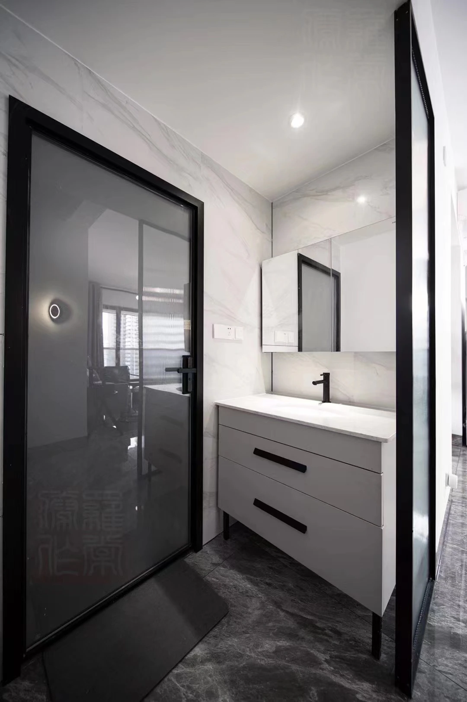
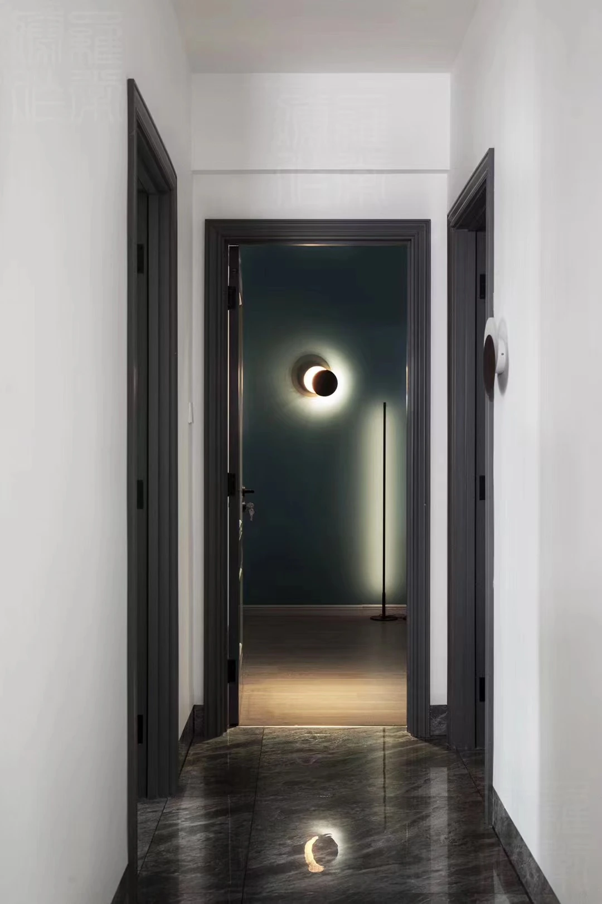
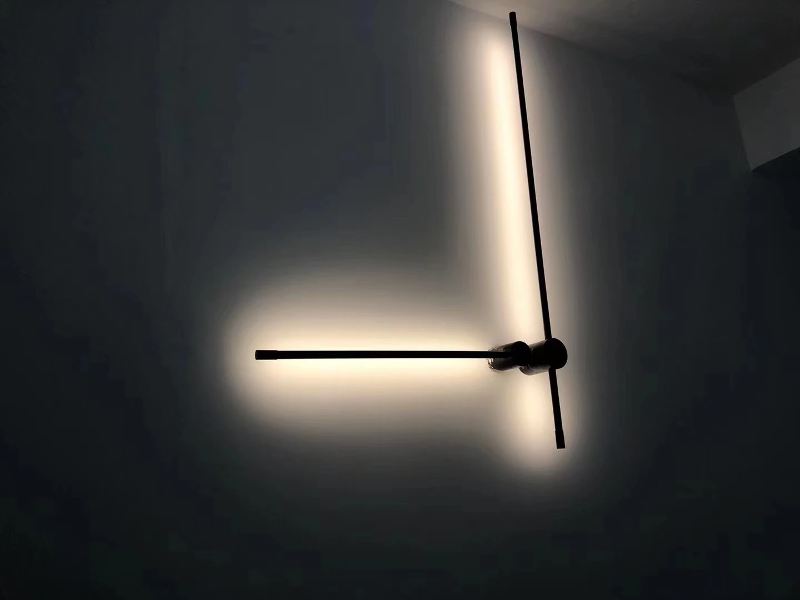
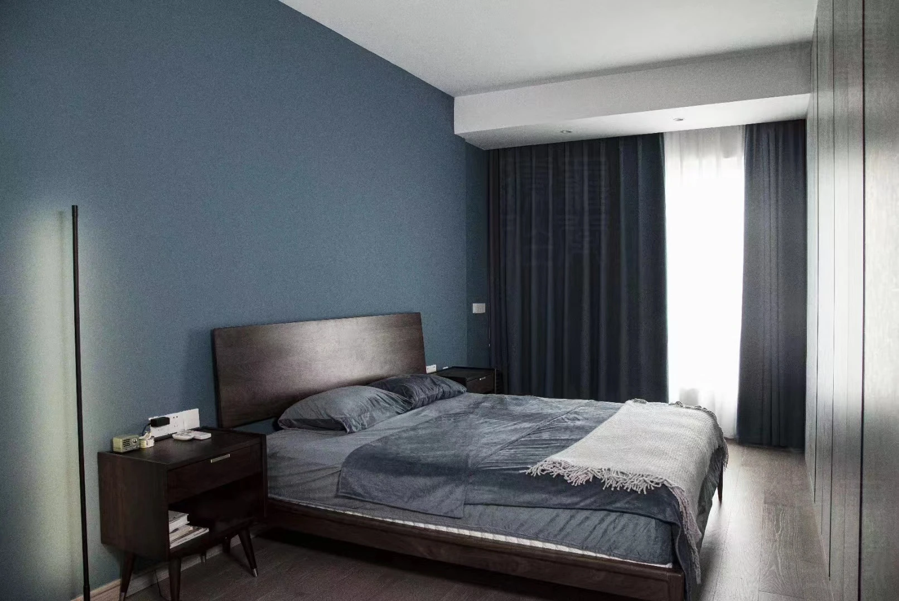
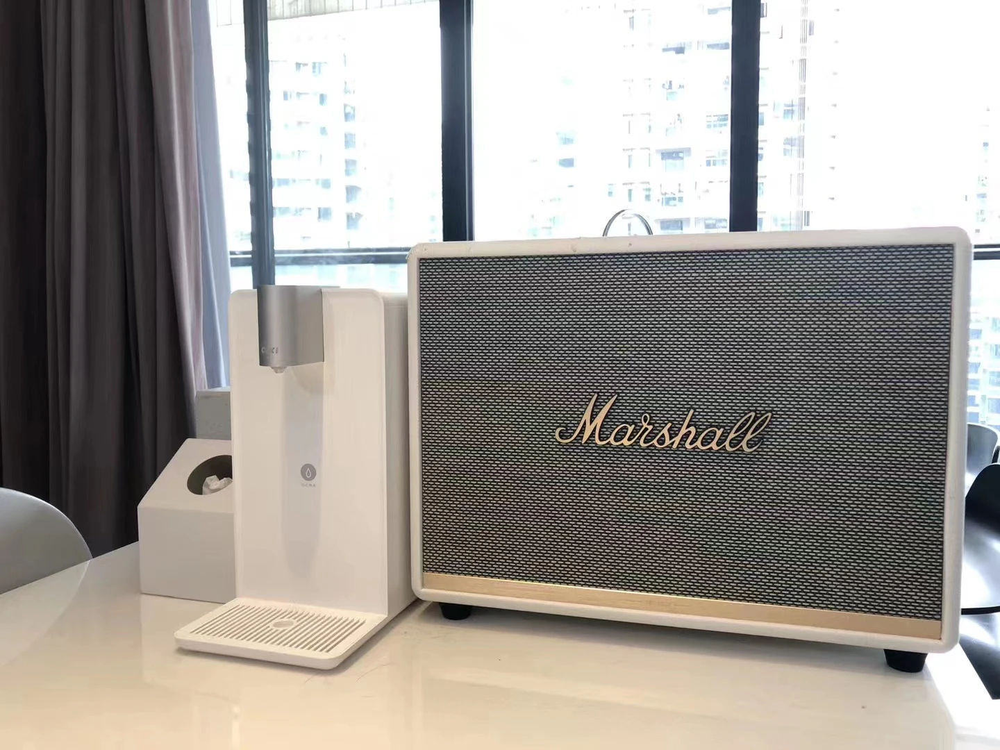
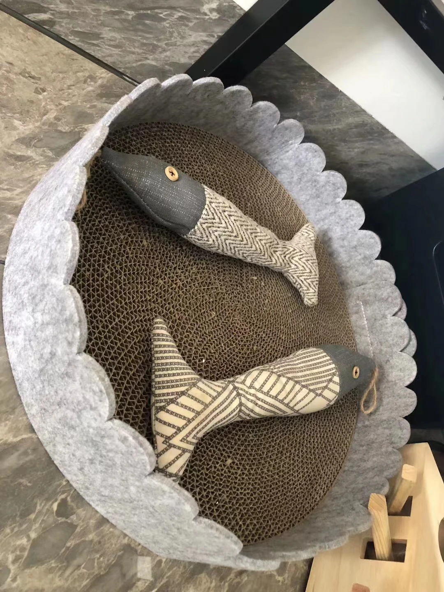
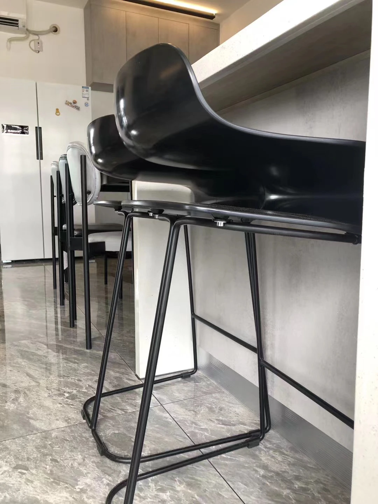
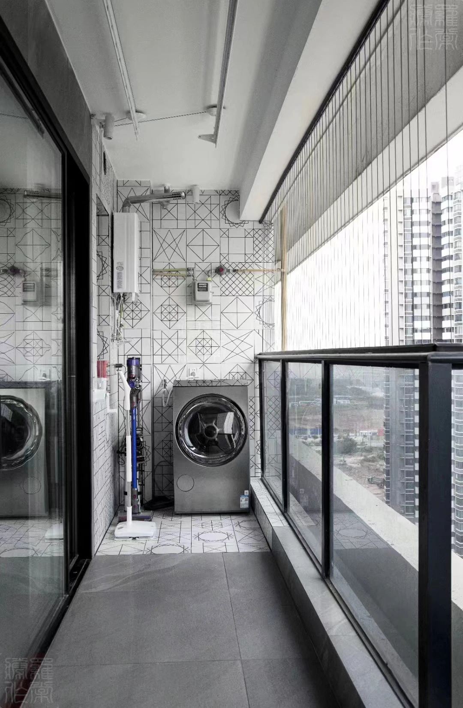

BLUE–GREY
ORDER
蓝灰秩序 Trật tự xanh xám
蓝灰色并不是覆盖整个住宅的单一表面，而是一套组织空间的秩序。 客厅、餐区、玻璃厨房、走廊与卧室在不同深浅之间延续； 黑色门框、线性灯具和深色家具建立边界，紫灰织物与日常物件则降低空间的冷感。
Blue-grey is used not as one continuous finish, but as an ordering system. Living, dining, glass kitchen, corridor and bedroom move through different tonal depths, while black frames, linear lighting and dark furniture define the spatial edges.
Xanh xám không phải là một lớp hoàn thiện duy nhất, mà là hệ trật tự liên kết phòng khách, khu ăn, bếp kính, hành lang và phòng ngủ. Khung đen, đèn tuyến tính và nội thất tối màu xác lập ranh giới, còn vải màu tím xám cùng đồ dùng hằng ngày làm dịu không gian.
COLOUR DEFINES
THE FIELD.
客厅、餐区与玻璃厨房被放在同一视野中。 白色顶面提供明度，深灰石纹地面形成连续基底， 紫灰沙发与窗帘将冷色空间转化为更适合日常停留的公共区域。
DARK LINES,
CLEAR EDGES.
黑框玻璃、门套与线性壁灯不是独立装饰， 而是反复出现的界面工具。它们把厨房、洗手区与走廊清楚分开， 同时让视线和光线仍可继续穿过住宅。
Black-framed glass, door surrounds and linear wall lighting act as repeated spatial tools. They separate kitchen, vanity and corridor without losing visual continuity.
Vách kính khung đen, khung cửa và đèn tường tuyến tính phân định bếp, khu rửa mặt và hành lang, nhưng vẫn duy trì sự liên tục của ánh sáng và tầm nhìn.




A QUIETER
BLUE.
卧室将公共区域的蓝灰关系进一步收敛。 一面低饱和蓝墙、深色木床和灰色织物构成安静背景， 窗帘对自然光进行分层，使冷色基调保持柔和。
In the bedroom, the public palette becomes quieter: a muted blue wall, dark timber bed and grey textiles form a restrained private setting.
Trong phòng ngủ, bảng màu chung trở nên yên tĩnh hơn: tường xanh trầm, giường gỗ tối màu và vải xám tạo nên không gian riêng tư tiết chế.
OBJECTS COMPLETE
THE INTERIOR.
音响、猫窝、吧椅与生活阳台没有被隐藏。 这些物件让住宅从摄影中的“完成状态”进入真实使用， 也说明设计秩序能够容纳不同尺度的日常活动。




Order is not the absence of life.
It is the structure that allows life to remain visible.
而是让生活在空间中清晰地发生。
mà tạo nên cấu trúc để đời sống hiện diện rõ ràng.